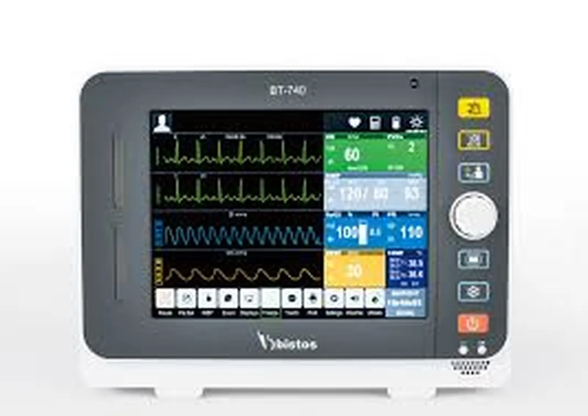
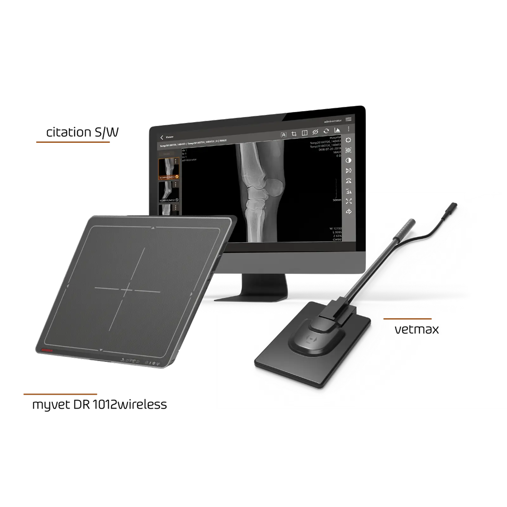
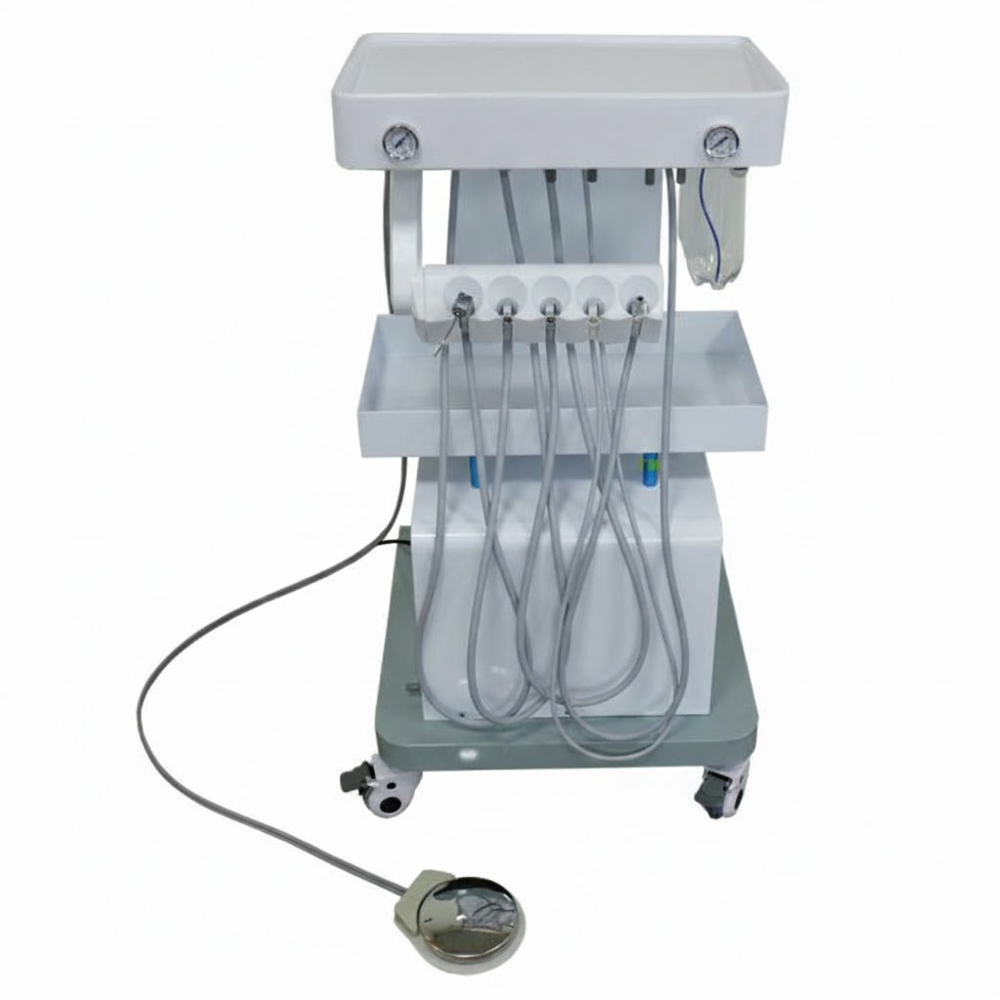
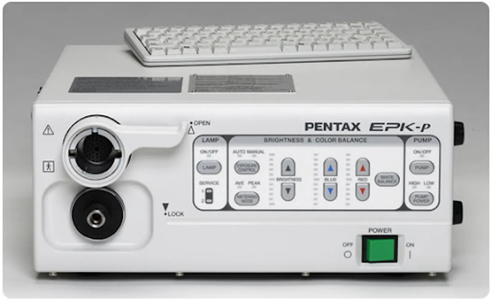
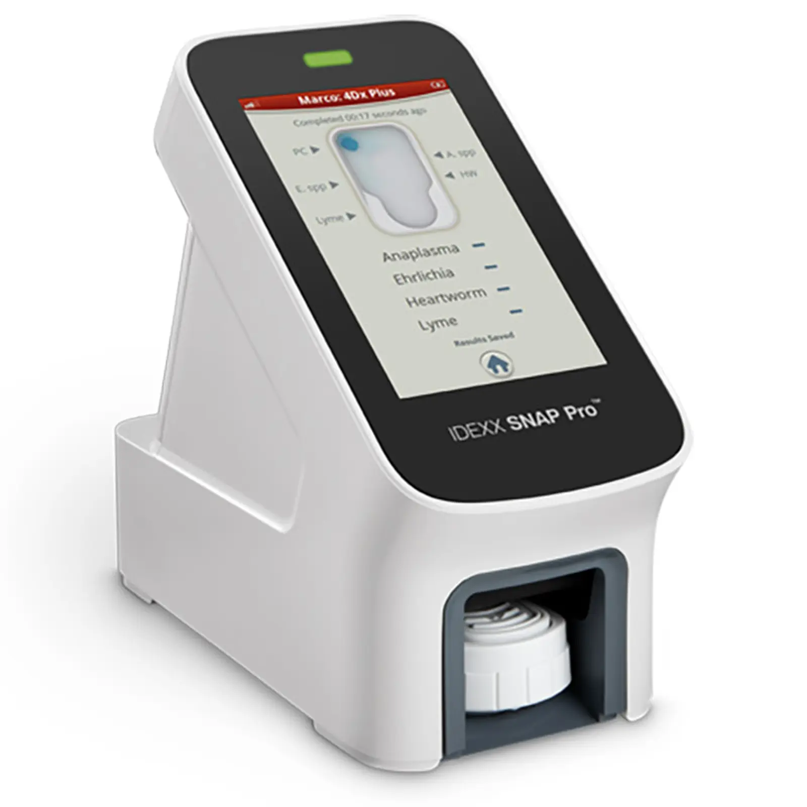
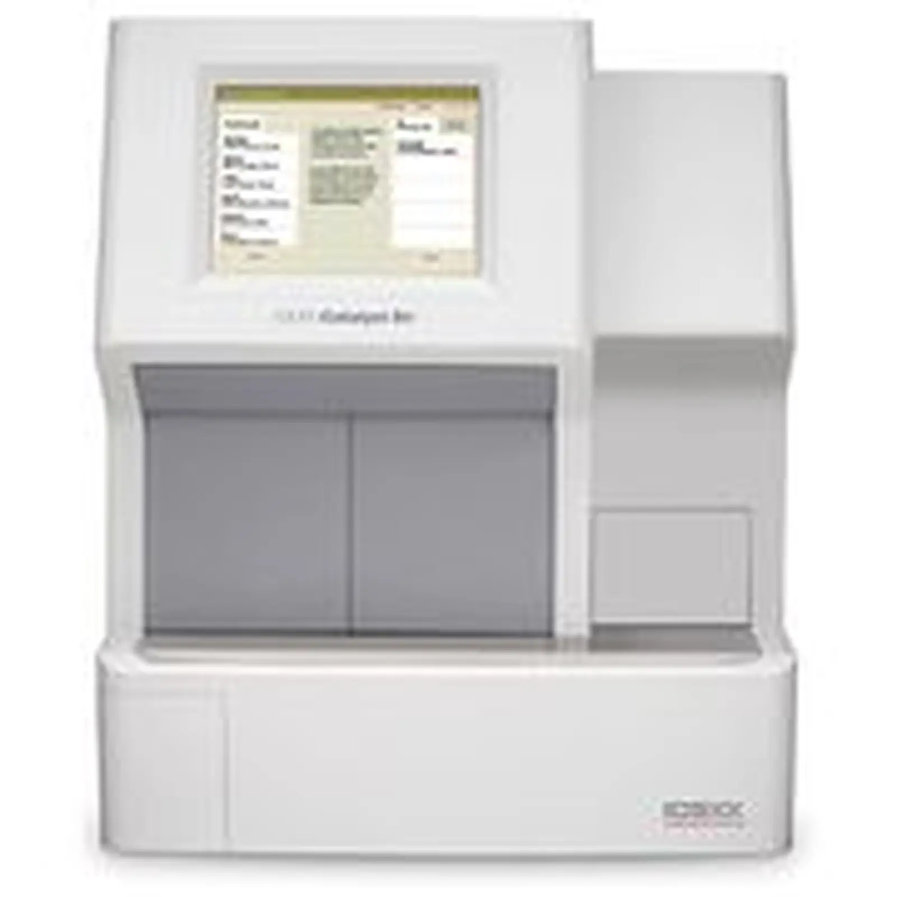
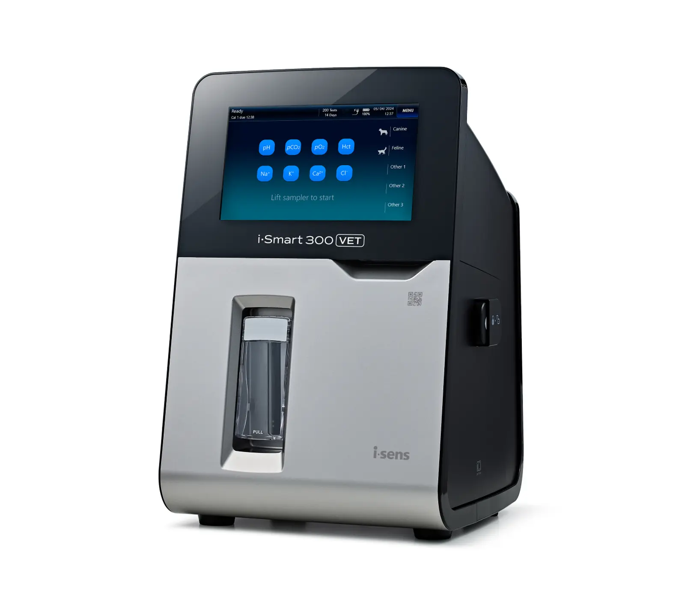
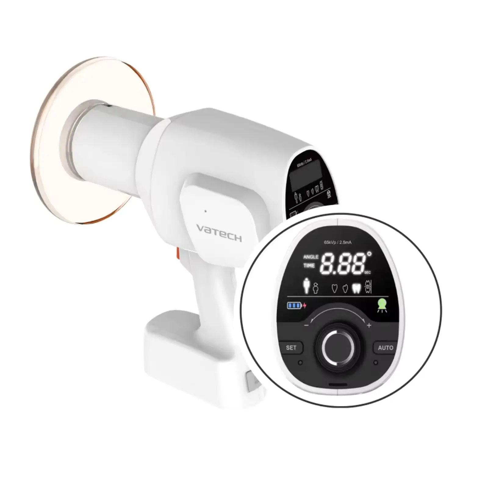
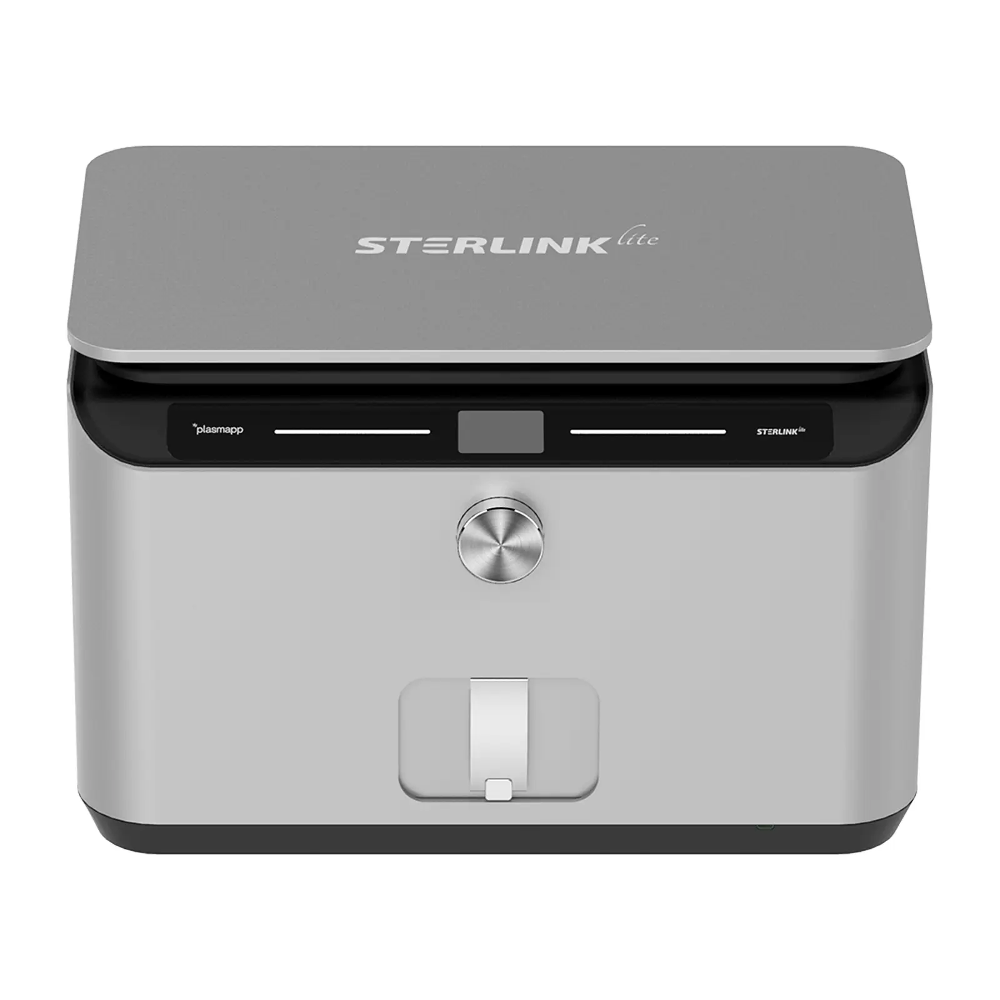

내과센터

심장·호흡기 내과
심장 및 호흡기 질환에 대한 전문적인 진단과 치료를 제공합니다. 최신 초음파 및 흉부 방사선 장비를 활용하여 정확한 상태를 파악하고, 환자 맞춤형 심장 관리 프로그램을 운영합니다.
관련 장비




신장·비뇨기 내과
만성 신부전, 결석 등 신장 및 비뇨기계 질환을 집중 관리합니다. 혈액 검사 및 단백뇨 분석, 영상 진단을 통해 조기 진단 및 지속적인 식이/약물 관리를 도와드립니다.
관련 장비




소화기 내과
구토, 설사, 췌장염 등 소화기 질환에 대한 정밀 검사와 치료를 진행합니다. 내시경 및 복부 초음파를 통해 소화기관의 이상을 세밀하게 관찰하고 근본적인 원인을 해결합니다.
관련 장비




내분비 내과
당뇨, 쿠싱증후군, 갑상선 질환 등 호르몬성 질환을 전문적으로 다룹니다. 호르몬 자극 검사 및 농도 측정을 통해 정확한 수치를 모니터링하며 장기적인 관리를 실시합니다.
관련 장비



종양 내과
항암 치료 및 종양 관리를 통해 환자의 삶의 질을 높입니다. 조직 검사 및 전이 여부 확인을 통해 최적의 기수 판정을 내리고 맞춤형 항암 프로토콜을 제시합니다.
관련 장비


피부과
난치성 피부 질환, 알러지성 피부염 등을 정확히 진단하고 치료합니다. 피부 소양검사, 곰팡이 배양 검사 등을 통해 감염성 및 비감염성 피부병을 구분하여 효과적으로 치료합니다.
관련 장비

